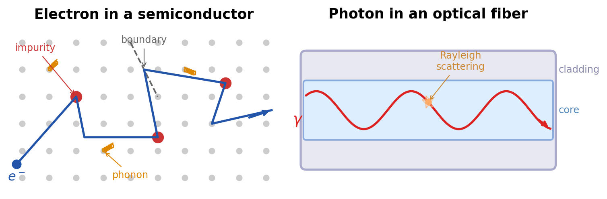
Introduction
Fundamental Physical Limitations of Electronics
Modern electronics has achieved remarkable miniaturization, yet several fundamental physical effects impose hard limits on how fast and how densely electronic circuits can operate.
As circuit dimensions shrink, the product of resistance and capacitance, the RC time constant, does not scale favorably. Every wire and every transistor gate contributes parasitic resistance and capacitance, and their product sets a minimum switching time that cannot be reduced simply by making things smaller. This creates a fundamental speed ceiling for electronic signal propagation in integrated circuits.
Closely related is the problem of heat dissipation. Every current flowing through a resistive element produces Joule heat proportional to \(I^2 R\). As transistor density increases following Moore’s Law, the power density on a chip rises dramatically. Modern processors already dissipate on the order of 100 W/cm², approaching the limits of what conventional cooling can handle.
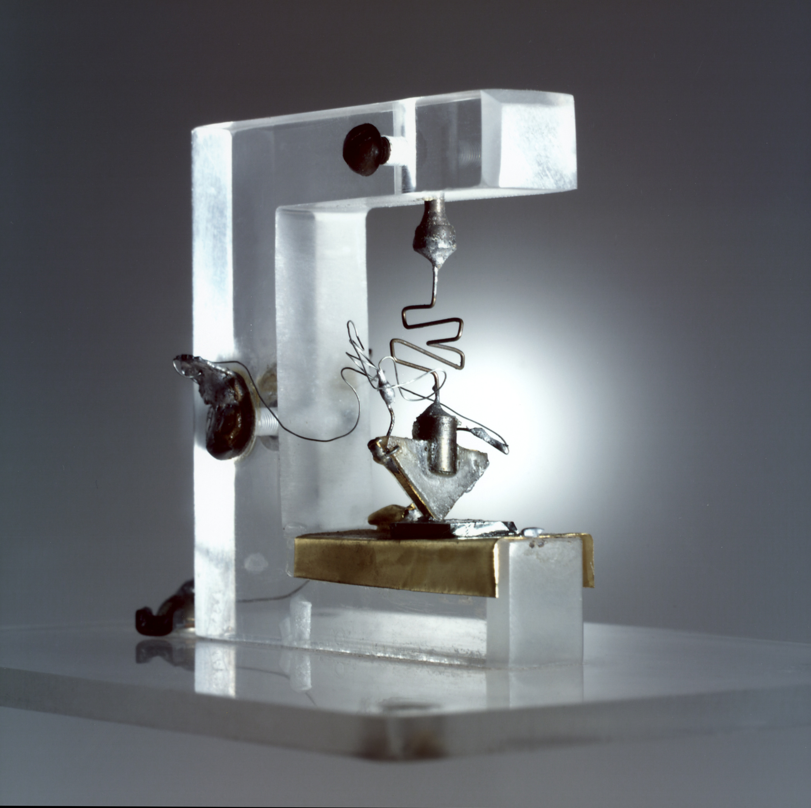
At high frequencies, a more subtle effect emerges: the skin effect. Electromagnetic fields penetrate conductors only to a characteristic depth \(\delta = \sqrt{2\rho / (\omega \mu)}\), which decreases with frequency. At GHz frequencies, current is confined to a thin shell near the conductor surface, dramatically increasing the effective resistance and limiting signal integrity.
Finally, current-carrying wires inevitably act as antennas. They both radiate and receive electromagnetic energy. As clock frequencies rise, electromagnetic interference and cross-talk between neighboring signal lines become increasingly severe, requiring elaborate shielding and signal-processing techniques that add complexity, cost, and latency.
Why Photonics? Advantages from Maxwell’s Equations
Given these electronic bottlenecks, it is natural to ask whether a different information carrier could circumvent them. Photons, the quanta of the electromagnetic field at optical frequencies, offer several fundamental advantages rooted directly in Maxwell’s equations.
Photons at optical frequencies (\(\sim 10^{14}\) Hz) carry energies of roughly 1–2 eV per quantum. This is far above the thermal noise floor at room temperature (\(k_B T \approx 25\) meV), giving optical signals an inherently high signal-to-noise ratio. More importantly, the enormous carrier frequency enables modulation bandwidths that are simply inaccessible to electronics.
Light can be guided in dielectric waveguides and optical fibers through total internal reflection, focused to diffraction-limited spots, and split or combined using passive optical elements, all without the scattering, defect interactions, and phonon coupling that limit electron transport in solids. Photons in a waveguide propagate as guided electromagnetic modes whose dispersion relation \(\omega(\beta)\) can be engineered through geometry and material choice with far greater flexibility than the electronic band structure of a semiconductor crystal.
Quantitative Comparisons
The practical consequences of these physical differences are striking.
Bandwidth. According to Shannon’s theorem, the capacity of a communication channel scales linearly with its bandwidth. Optical frequencies offer a usable bandwidth of roughly 100 THz, compared to about 10 GHz for the highest practical electronic channels, a factor of 10,000. A single optical fiber can carry data rates exceeding 100 Tbit/s using wavelength-division multiplexing, while the fastest electronic interconnects plateau in the tens of Gbit/s range.
Propagation losses. Modern optical fibers achieve attenuation as low as 0.2 dB/km near the 1550 nm wavelength window. By contrast, electronic transmission lines (coaxial cables, microstrip lines) typically suffer losses of 10–100 dB/km at GHz frequencies. This difference is why transcontinental and transoceanic communication is carried entirely by fiber optics.
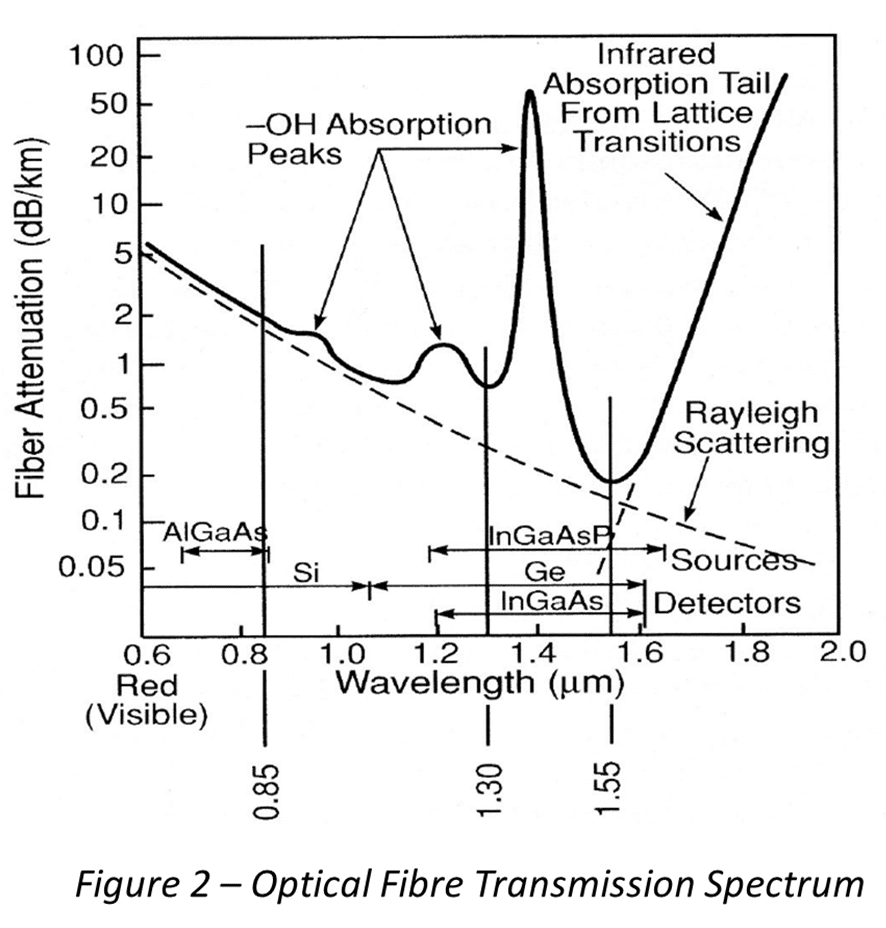
Energy per bit. The theoretical minimum energy required to transmit one bit of information optically is on the order of \(10^{-18}\) J (a few photons at telecom wavelengths), while electronic transmission requires roughly \(10^{-15}\) J per bit, three orders of magnitude more. In an era of rapidly growing data-center energy consumption, this difference has profound practical implications.
Quantum Mechanical Considerations
Beyond classical advantages, photons possess unique quantum-mechanical properties that open entirely new technological possibilities.
Photons maintain quantum coherence, meaning a well-defined phase relationship, over remarkably long distances. In optical fibers, coherence lengths of hundreds of kilometers are routinely achieved. Electrons in solid-state environments, by contrast, lose coherence after nanometers to micrometers due to interactions with lattice vibrations, impurities, and other electrons. This makes photons the natural carrier for quantum communication and quantum key distribution, where coherence is essential for security guarantees.
There is a deeper reason for this robustness: photons are bosons that, under normal conditions, do not interact with each other. Two light beams can cross in free space without any mutual disturbance, a property that has no analogue in electronic circuits, where signals sharing a conductor inevitably interfere. This non-interaction is both a strength (enabling wavelength-division multiplexing and crossing waveguides) and a challenge (making photon-photon interactions for all-optical switching difficult to achieve), a theme we will revisit throughout this course.
Optomechanics: When Light Moves Matter
Photons carry momentum. Although the momentum of a single photon, \(p = \hbar k\), is extraordinarily small, it can produce measurable mechanical effects when photons interact repeatedly with a mechanical object. This idea goes back to Kepler’s observation that comet tails point away from the Sun and to Maxwell’s prediction of radiation pressure, but it has developed into a major field of physics only in the past two decades.
In cavity optomechanics, a mechanical resonator, such as a vibrating mirror, a membrane, or a nanoscale beam, forms part of an optical cavity. Photons bouncing between the cavity mirrors exert radiation pressure on the mechanical element, and the displacement of that element in turn shifts the cavity resonance frequency. This mutual coupling between light and mechanical motion creates a rich dynamical system. By detuning the laser frequency relative to the cavity resonance, one can either amplify or damp the mechanical motion. Red-detuning the laser leads to net cooling of the mechanical oscillator: each photon that enters the cavity picks up energy from the mechanical mode through an anti-Stokes scattering process and carries it away when it leaves. Using this technique, several groups have cooled mechanical oscillators to their quantum ground state, reaching regimes where the zero-point fluctuations of a macroscopic object become the dominant source of motion.
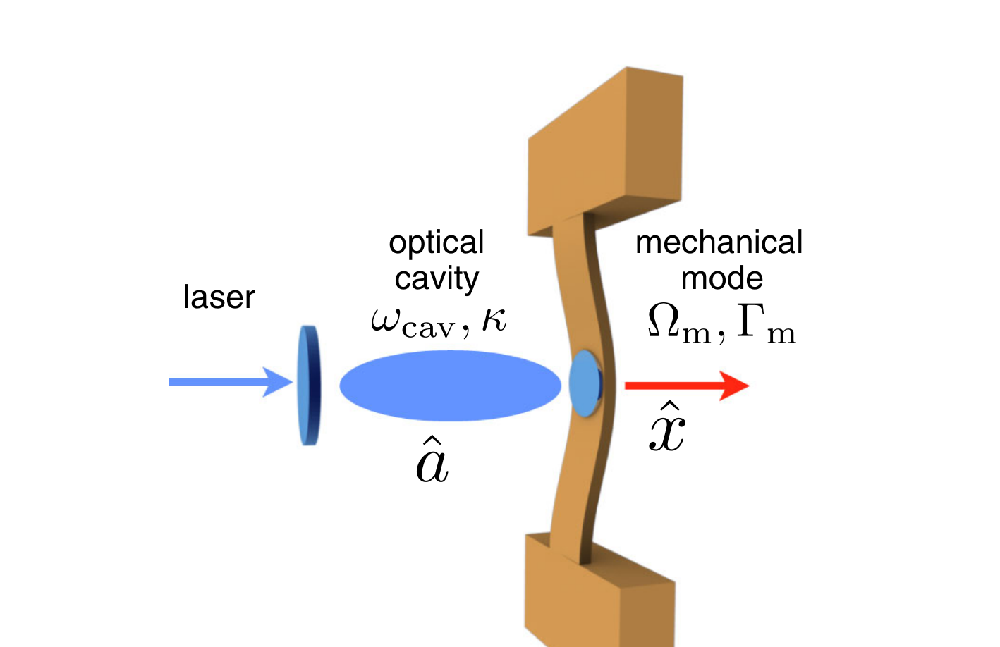
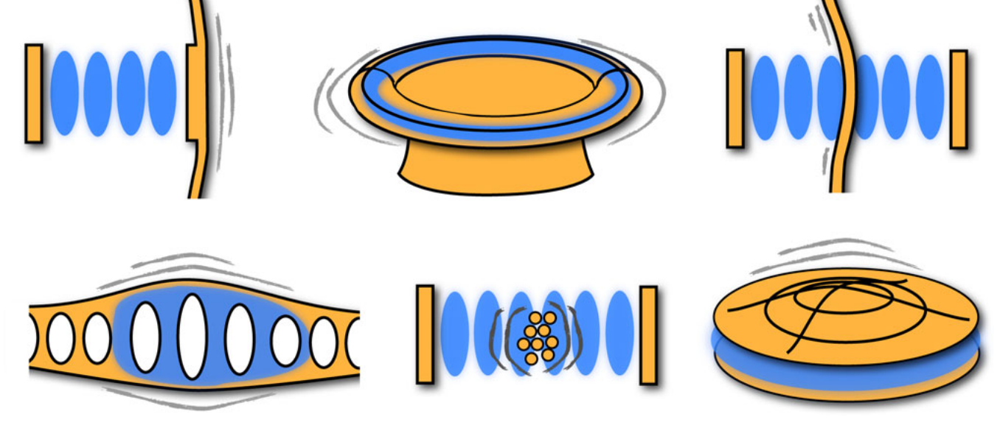
The practical impact of optomechanics extends across many domains. Gravitational wave detectors such as LIGO are, at their core, optomechanical instruments: laser interferometers whose sensitivity is ultimately limited by radiation pressure noise and the quantum back-action of photons on the test masses. The detection of gravitational waves in 2015, recognized with the 2017 Nobel Prize in Physics, represented a triumph of precision optomechanics at the kilogram scale. At the opposite extreme, nanomechanical resonators coupled to optical cavities are being developed as ultrasensitive mass, force, and acceleration sensors, with applications ranging from inertial navigation to the detection of single molecules.
Optomechanics also provides a route toward testing quantum mechanics at macroscopic scales. Preparing a mechanical oscillator containing billions of atoms in a quantum superposition state or entangling two spatially separated mechanical resonators via shared optical fields are active experimental goals. These experiments probe the boundary between quantum and classical physics in a way that no other platform can, and they rely entirely on the coherent coupling between photons and mechanical degrees of freedom.
The connection to the broader field of photonics is direct: optical tweezers (discussed below) are optomechanical systems in which the “cavity” is replaced by a tightly focused beam and the “mechanical resonator” is a trapped particle. Levitated optomechanics, where a nanoparticle is optically trapped in vacuum and cooled to its quantum ground state, has recently emerged as one of the most sensitive force-sensing platforms ever developed.
Photonic Computing and Wavefront Control
The advantages of photons for information transport raise a compelling question: can light be used not only to carry data but also to process it? Over the past decade, this idea has moved from theoretical speculation to active experimental reality.
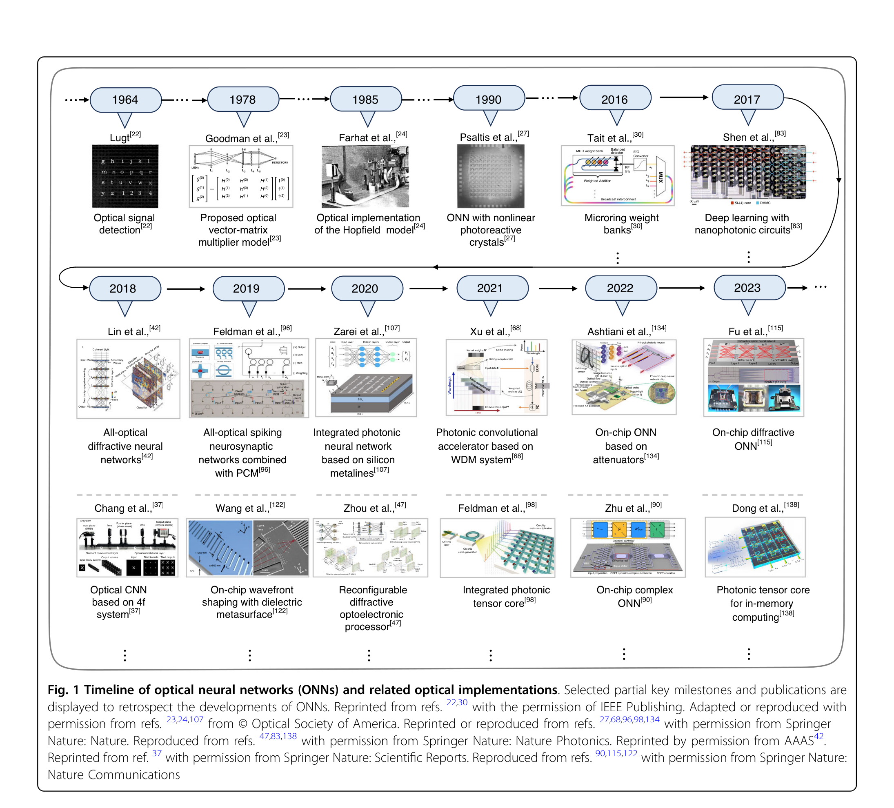
Optical neural networks. A conventional electronic neural network performs repeated matrix-vector multiplications followed by nonlinear activation functions. Each multiplication requires many transistor switching events, each dissipating energy. In an optical neural network, the same linear operation can be performed by passing light through a carefully designed arrangement of beam splitters and phase shifters, or through a diffractive optical element. Because light propagation through a passive optical system is inherently a linear transformation, the matrix multiplication happens at the speed of light and with near-zero energy cost. The key challenge lies in implementing the nonlinear activation, which typically still requires electronic or optical nonlinear elements. Recent integrated photonic circuits on silicon have demonstrated neural network inference at speeds and energy efficiencies that electronic accelerators cannot match for certain tasks, particularly in the low-latency regime relevant to signal processing and autonomous systems.
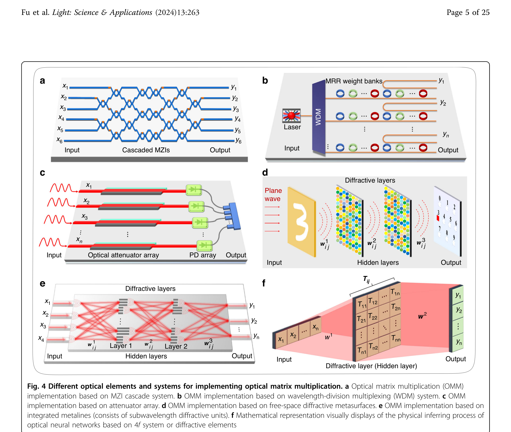
Reservoir computing with random scattering media. A particularly elegant approach exploits what might initially seem like a nuisance: the complex multiple scattering of light in disordered media such as ground glass, white paint, or biological tissue. When a coherent light field enters such a medium, it undergoes a high-dimensional, nonlinear transformation. The resulting speckle pattern at the output encodes the input in a complex but reproducible way. In the framework of reservoir computing, this scattering medium acts as a fixed, high-dimensional “reservoir” that projects inputs into a rich feature space. Only a simple linear readout layer needs to be trained, drastically reducing the computational cost of learning. Experiments have demonstrated that a scattering slab of zinc oxide, just micrometers thick, can classify handwritten digits, perform speech recognition, and solve time-series prediction tasks. The medium provides millions of effective degrees of freedom for free, powered only by the propagating light itself.
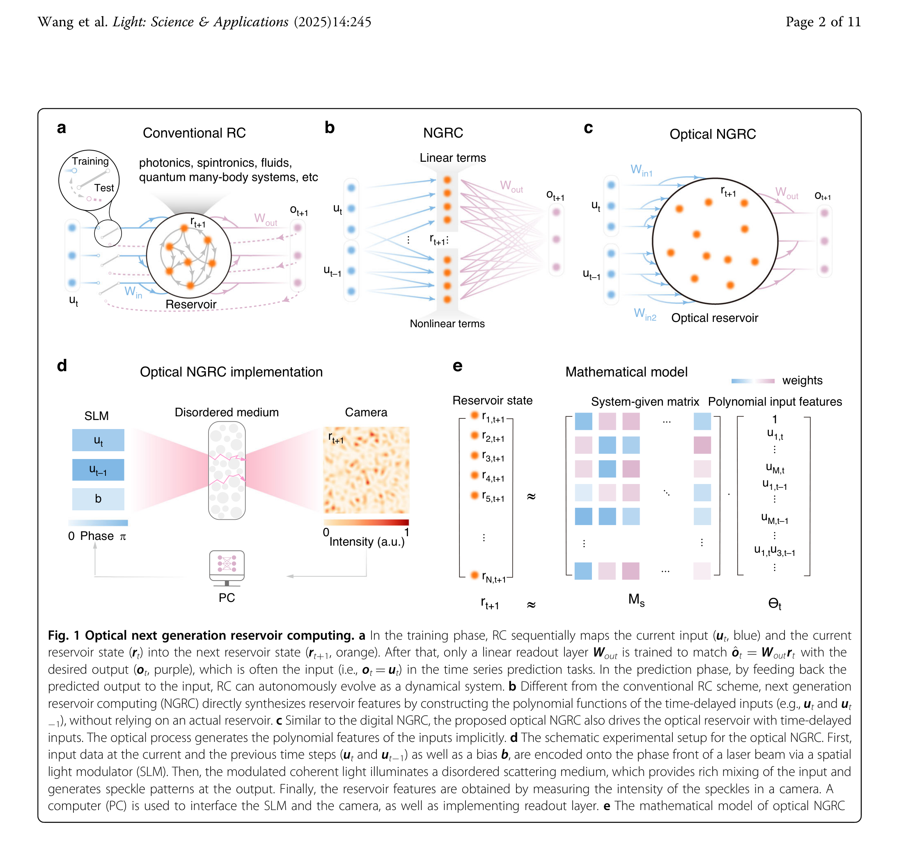
Adaptive optics. Both optical computing and deep-tissue imaging face a common obstacle: light propagating through complex or turbulent media accumulates wavefront distortions that scramble the phase and amplitude of the field. Adaptive optics provides the tools to measure and correct these distortions in real time. Originally developed for ground-based astronomy, where atmospheric turbulence limits telescope resolution, adaptive optics systems use a wavefront sensor (typically a Shack-Hartmann sensor) to measure the phase aberration and a deformable mirror to apply the conjugate correction, restoring diffraction-limited performance.
The same principle has been adapted for microscopy, where scattering and refractive index variations in biological tissue degrade image quality at depths beyond a few tens of micrometers. Adaptive optical elements integrated into multiphoton and light-sheet microscopes now enable diffraction-limited imaging hundreds of micrometers deep into living tissue. More recently, wavefront shaping has gone further: by measuring the full transmission matrix of a scattering medium, it becomes possible to focus light through and even inside opaque materials. This connects directly back to reservoir computing, where the same transmission matrix that enables computation also enables focusing, highlighting a deep link between optical information processing and imaging through complex media.
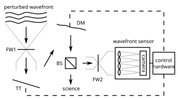
{kind=link}
Optical Microscopy: Seeing Beyond the Diffraction Limit
The impact of photonics extends far beyond information technology. One of the fastest growing subfields is optical microscopy, where a series of breakthroughs over the past three decades has fundamentally changed what can be observed in the natural sciences.
For more than a century, the resolution of optical microscopes was considered to be fundamentally limited by diffraction. Ernst Abbe established in 1873 that two point sources cannot be distinguished if they are closer than roughly \(d \approx \lambda / (2\, \mathrm{NA})\), where \(\lambda\) is the wavelength and NA the numerical aperture of the objective. For visible light, this sets a hard floor around 200 nm, leaving the entire nanoscale world inaccessible to optical imaging.
Beginning in the 1990s, several techniques broke through this barrier. Confocal and multiphoton microscopy improved contrast and optical sectioning by rejecting out-of-focus light and by exploiting the nonlinear intensity dependence of two-photon absorption. Structured illumination microscopy (SIM) doubled the effective resolution by encoding high-frequency spatial information into detectable Moiré patterns. Most dramatically, stimulated emission depletion (STED) microscopy and single-molecule localization techniques such as PALM and STORM achieved resolutions of 20 nm and below, earning the 2014 Nobel Prize in Chemistry for Stefan Hell, Eric Betzig, and William Moerner.
These advances rely on distinctly photonic phenomena: the precise control of stimulated emission, the stochastic switching of single fluorescent molecules, and the coherent structuring of illumination patterns. They have transformed cell biology by making it possible to observe the organization of proteins, membranes, and organelles in living cells at the molecular scale. Light-sheet microscopy, another recent development, combines optical sectioning with gentle illumination to image entire embryos and organs over hours and days with minimal photodamage.
Spectroscopic sensing. Every molecule has a characteristic absorption and emission spectrum. Fluorescence spectroscopy can detect specific biomolecules at the single-molecule level, while Raman spectroscopy provides a chemical fingerprint without any labeling. These techniques enable rapid, non-invasive identification of pathogens, cancer biomarkers, and metabolic states.
Optical coherence tomography (OCT). By measuring the interference of backscattered broadband light, OCT produces cross-sectional images of tissue with micrometer resolution and millimeter penetration depth. It has become the standard imaging modality in ophthalmology and is increasingly used in cardiology, dermatology, and developmental biology. The technique is a direct application of low-coherence interferometry, connecting fundamental wave optics to clinical practice.
Light in Biology and Biophotonics
The interaction of light with biological matter opens a third major domain of photonics, one that bridges physics, biology, and medicine. This interaction has two complementary sides: on the one hand, photonic tools allow us to observe and manipulate biological systems with extraordinary precision; on the other hand, nature itself has evolved remarkably sophisticated structures to harvest and use light energy.
Light as a tool for biology. Biological tissue is a complex optical medium. It absorbs, scatters, and emits light in ways that carry rich information about molecular composition, cellular structure, and physiological state. Biophotonics exploits these interactions for both diagnostics and therapy. Optical microscopy, including the super-resolution techniques discussed above, has transformed our ability to observe subcellular structures in living organisms. Beyond imaging, tightly focused laser beams exert piconewton-scale forces on microscopic objects through radiation pressure and gradient forces. Optical tweezers, recognized with the 2018 Nobel Prize in Physics for Arthur Ashkin, allow researchers to hold, move, and measure the mechanical properties of individual cells, bacteria, and even single DNA molecules. This has opened an entire field of single-molecule biophysics, revealing the forces and step sizes of molecular motors, the elastic properties of biopolymers, and the mechanics of cell division.
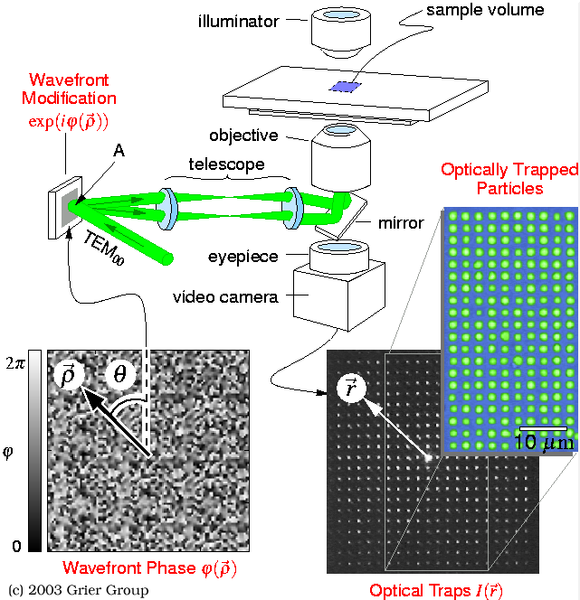
Light harvesting in nature. On the other side of this relationship, living organisms have evolved exquisite photonic structures to capture and channel light energy. Perhaps the most profound example is photosynthesis itself. In purple bacteria, the light-harvesting complex II (LH2) consists of a ring of protein subunits that bind bacteriochlorophyll and carotenoid molecules in a highly symmetric cylindrical arrangement. Sunlight absorbed by the carotenoids and the outer ring of bacteriochlorophylls (absorbing at 800 nm) is funneled with near-unity quantum efficiency to the inner ring (absorbing at 850 nm) and from there to the reaction center, where charge separation occurs. The energy transfer proceeds via Förster resonance energy transfer (FRET) and excitonic coupling between the tightly packed chromophores. Recent experiments have even suggested that quantum coherence may play a role in optimizing energy transfer pathways at physiological temperatures, making photosynthetic antenna complexes a subject of active research at the intersection of quantum physics and biology.
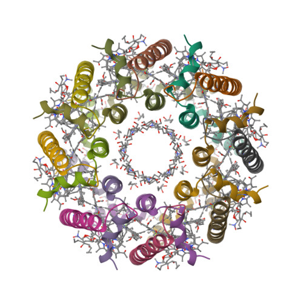
These two sides, light as a precision tool for probing biology and light as an energy source that biology has learned to exploit, are deeply connected. Understanding how natural photonic structures achieve near-perfect efficiency informs the design of artificial light-harvesting systems, while the photonic tools we develop enable us to study these very structures at the single-molecule level.